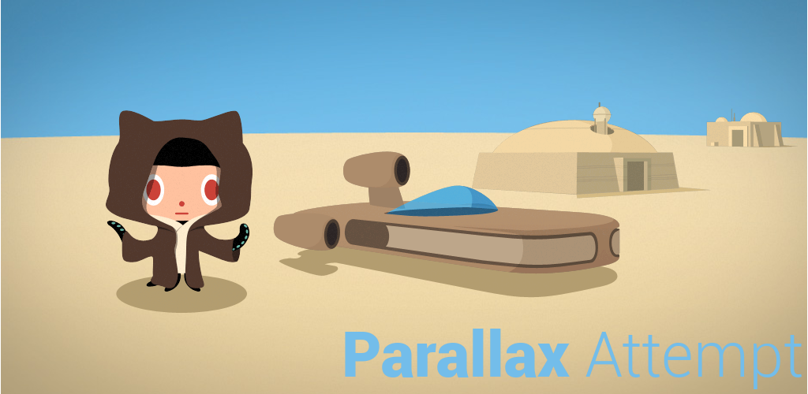

Parallax attempt : a small attempt to perform parallax effect
This project is a first attempt to perform parallax effect. Considered it as a proof concept since no effort has been made to support multiple screen sizes | orientations and different device sensors.
Motions are based on Accelerometer as almost every Android-powered handset and table has an accelerometer. Moreover, according to the official documentation, "it uses about 10 times less power than the other motion sensors". For us, low power consumption is essential for animated layout.
In order to provide "smooth rendering", we have implemented low-pass filter to reduce noise and added a custom Animator to evaluate parallax translation between two sensor values.
The images used for this demo are entirely based on the 404 GitHub page which has already been designed for a parallax experiment based on mouse motion.
Check out our github page to see our progress and how to use it : Parallax Attempt on GitHub.